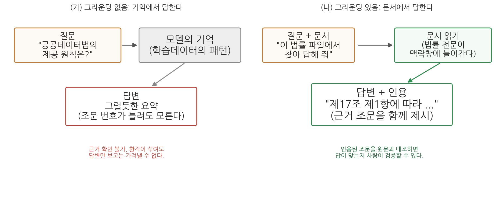
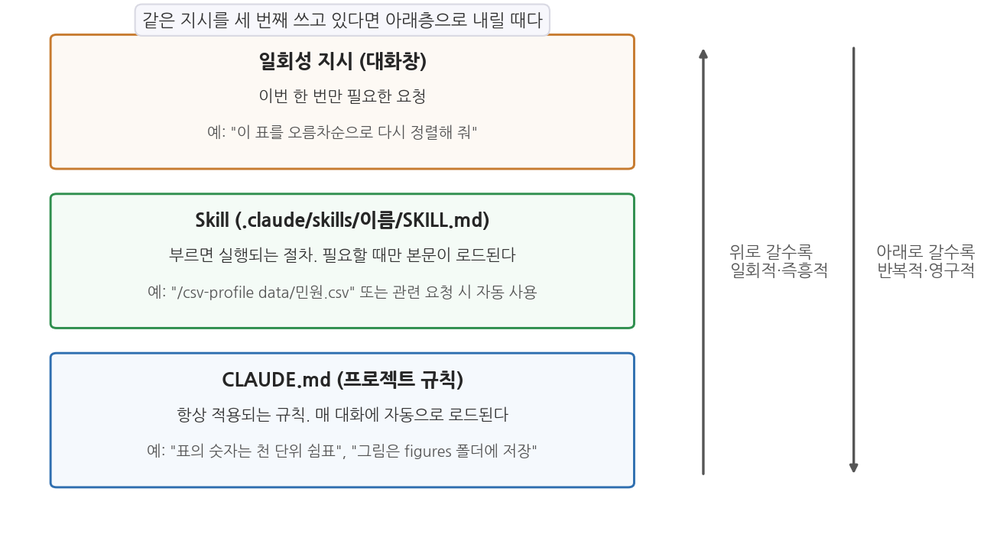
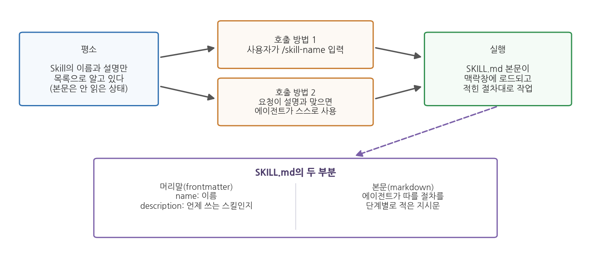

11주차 1회차. 문서 그라운딩과 작업 자동화 (Skill)
신뢰하라, 그러나 검증하라. (러시아 속담. 로널드 레이건 미국 대통령이 즐겨 인용했다)
이 장에서 배우는 것
구청 인턴 생활도 두 달째다. 이번에는 과장이 이런 질문을 들고 왔다. "민간 업체가 우리 구의 주차장 데이터를 받아서 유료 앱을 만들겠다는데, 이거 법적으로 줘도 되는 건가? 영리 목적인데?" 여러분은 에이전트에게 물어볼 수 있다. 그리고 에이전트는 분명히 그럴듯한 답을 줄 것이다. 문제는 그다음이다. 과장에게 "AI가 된다고 했습니다"라고 보고할 수는 없다. 행정의 답변에는 근거 조문이 붙어야 한다. "「공공데이터의 제공 및 이용 활성화에 관한 법률」 제3조 제4항에 따르면 영리적 이용도 원칙적으로 제한할 수 없습니다"처럼, 누구든 원문을 펴서 확인할 수 있는 답이어야 한다.
2주차에서 우리는 에이전트가 기억에서 답할 때 환각이 생긴다는 것을 배웠고, 실습에서 직접 목격도 했다. 이 장의 전반부는 그 문제의 해법을 다룬다. 에이전트에게 문서를 주고, 그 문서에 근거해서만, 인용과 함께 답하게 만드는 방법이다. 이를 그라운딩이라 부른다.
후반부는 다른 종류의 문제를 다룬다. 학기가 진행되면서 여러분은 같은 지시를 반복해서 입력하고 있는 자신을 발견했을 것이다. 새 CSV를 받을 때마다 "행과 열을 세고, 결측을 확인하고, 요약통계를 내고..."를 다시 타이핑하는 식이다. 이런 반복 절차를 파일 하나로 저장해 두고 명령 한 줄로 불러 쓰는 장치가 Skill이다. 마지막으로, 이렇게 자동화가 쉬워질수록 더 중요해지는 질문을 다룬다. 무엇을 맡기고 무엇을 사람이 쥐고 있어야 하는가.
이 장에서 구체적으로 다음을 배운다.
- 그라운딩이 무엇이고, 왜 환각을 줄이는지 (2주차와 연결)
- 법령·정책문서를 다루는 에이전트에게 인용과 출처를 요구하는 방법
- 반복 작업을 표준화하는 Skill과 SKILL.md 파일의 구조
- 슬래시 커맨드로 스킬을 직접 호출하는 방법
- 자동화의 경계, 곧 맡길 일과 남길 일을 가르는 기준
이 장은 두 개의 질문을 다룬다. 전반부는 "에이전트의 답을 어떻게 검증 가능하게 만드는가", 후반부는 "검증된 작업 방식을 어떻게 재사용하는가"다.
1.1 그라운딩: 기억이 아니라 문서에서 답하게 한다 → 1.2 법령 해석 에이전트: 인용과 출처를 요구한다 → 1.3 Skill: 반복 절차를 SKILL.md 파일로 표준화한다 → 1.4 슬래시 커맨드: 절차를 명령 한 줄로 부른다 → 1.5 경계: 무엇을 맡기고 무엇을 남길 것인가.
1.1 그라운딩: 문서에 근거해 답하게 만들기
닫힌책 시험과 열린책 시험
2주차의 환각 실습을 떠올려 보자. "웹 검색이나 파일 확인 없이, 기억만으로" 의성군의 고령인구비율을 물었을 때, 에이전트는 그럴듯한 수치를 만들어 내거나 답을 유보했다. 반대로 데이터 파일을 주고 "이 파일에서 찾아서 답해 줘"라고 하면 정확한 값이 나왔다. 같은 원리가 법령이나 정책문서 같은 텍스트에도 그대로 적용된다.
시험에 비유하면 이렇다. 기억만으로 답하게 하는 것은 닫힌책 시험이다. 공부를 많이 한 학생(학습데이터가 풍부한 주제)은 잘 답하지만, 공부가 얕은 부분(자료가 드문 좁은 주제)에서는 어렴풋한 기억으로 답안을 채운다. 문서를 주고 답하게 하는 것은 열린책 시험이다. 책을 펴 놓고 해당 쪽을 찾아 읽고 답하므로, 기억이 흐려도 답이 정확해진다. 게다가 "몇 쪽에서 찾았는지"를 적게 하면 채점자가 대조할 수도 있다.
이렇게 AI의 답변을 주어진 자료에 붙들어 매는 것을 그라운딩(grounding)이라 부른다. 영어 ground(땅에 대다, 근거를 두다)에서 온 말로, 답변이 모델의 기억이라는 허공이 아니라 확인 가능한 문서라는 땅을 딛고 서게 한다는 뜻이다.
그라운딩(grounding)은 AI가 기억(학습데이터의 패턴)이 아니라 사용자가 제공한 자료(문서, 데이터, 웹페이지 등)에 근거해 답하도록 만드는 것이다. 자료를 맥락창에 넣어 주고, 그 자료의 범위 안에서 답하게 하며, 근거의 위치(조문, 쪽, 행)를 함께 제시하게 하는 세 요소로 이루어진다.

그림 11-1이 두 방식을 비교한다. 왼쪽(가)에서는 질문이 모델의 기억으로 들어가 그럴듯한 답변이 나온다. 답변만 보고는 환각이 섞였는지 가려낼 수 없다. 오른쪽(나)에서는 질문과 함께 문서가 주어지고, 에이전트가 문서를 읽은 뒤 근거 조문을 인용하며 답한다. 여기서 알 수 있는 핵심은 인용의 역할이다. 인용이 붙는 순간, 사용자는 인용된 부분을 원문과 대조해 답의 옳고 그름을 직접 확인할 수 있게 된다. 그라운딩은 환각을 줄이는 기술이면서 동시에 검증을 가능하게 만드는 기술이다.
그라운딩의 재료는 맥락창에 들어가야 한다
그라운딩이 작동하는 원리는 2주차의 맥락창으로 설명된다. 에이전트가 문서 파일을 읽으면 그 내용이 맥락창(작업 기억)에 들어가고, 이후의 답변은 그 내용을 참조해 생성된다. 기억 속의 흐릿한 패턴 대신 방금 읽은 선명한 원문이 눈앞에 있으니, "다음에 올 그럴듯한 말"이 원문과 일치하는 방향으로 강하게 끌려가는 것이다.
여기서 두 가지 실용적 결론이 나온다. 첫째, 문서를 주지 않고 "공공데이터법에 따르면"이라고 묻는 것은 그라운딩이 아니다. 에이전트가 실제로 그 법률 파일을 읽는 행동(도구 사용 로그에 파일 읽기가 나타나는 것)을 확인해야 한다. 둘째, 문서가 아주 길면 주의가 필요하다. 수백 쪽짜리 문서 여러 개를 한꺼번에 읽히면 맥락창이 가득 차고, 대화가 길어지면 앞서 읽은 내용이 밀려날 수 있다. 필요한 부분만 발췌해 주거나, 문서를 나누어 다루는 것이 안전하다.
문서를 줘도 에이전트는 틀릴 수 있다. 문서를 읽고도 두 조문을 뒤섞어 요약하거나, 문서에 없는 내용을 아는 지식으로 슬쩍 보충하거나, "제17조"를 "제7조"로 잘못 옮겨 적는 일이 있다. 그래서 그라운딩 지시에는 반드시 두 가지를 함께 넣는다. "문서에 없는 내용은 없다고 답하라"는 범위 제한과, "근거 조문의 번호와 원문을 함께 인용하라"는 검증 고리다. 인용이 있어야 사람이 대조할 수 있고, 대조할 수 있어야 믿을 수 있다.
1.2 법령·정책문서 해석 에이전트: 인용과 출처
공공데이터 분석가가 법령을 만나는 순간
법령 해석은 법률가의 일 아닌가 싶겠지만, 공공데이터를 다루는 사람은 생각보다 자주 법령과 지침을 마주친다. 이 데이터를 개방해도 되는지(공공데이터법), 개인정보가 섞여 있으면 어떻게 해야 하는지(개인정보 보호법), 통계를 인용할 때 지켜야 할 규칙은 무엇인지(통계법), 데이터 파일에 딸려 온 이용약관은 무슨 뜻인지. 5주차에서 공공데이터 생태계를 배울 때 이런 규범들이 배경에 있었다.
이 교재에서 반복해 등장한 「공공데이터의 제공 및 이용 활성화에 관한 법률」(약칭 공공데이터법)을 예로 삼자. 국가법령정보센터(law.go.kr)에서 누구나 전문을 볼 수 있다. 이 법의 제1조는 법 전체의 목적을 이렇게 선언한다.
제1조(목적) 이 법은 공공기관이 보유·관리하는 데이터의 제공 및 그 이용 활성화에 관한 사항을 규정함으로써 국민의 공공데이터에 대한 이용권을 보장하고, 공공데이터의 민간 활용을 통한 삶의 질 향상과 국민경제 발전에 이바지함을 목적으로 한다.
제2조는 용어를 정의한다. 우리가 한 학기 내내 써 온 "공공데이터"라는 말의 법적 정의가 여기에 있다.
제2조(정의) 제2호 "공공데이터"란 데이터베이스, 전자화된 파일 등 공공기관이 법령 등에서 정하는 목적을 위하여 생성 또는 취득하여 관리하고 있는 광(光) 또는 전자적 방식으로 처리된 자료 또는 정보를 말한다.
그리고 제3조가 제공의 기본원칙을, 제17조가 제공대상의 범위를 정한다. 도입부의 과장 질문("영리 목적인데 줘도 되나?")에 대한 근거가 바로 제3조 제4항이다. 공공기관은 다른 법률에 특별한 규정이 있는 경우 등을 제외하고는 공공데이터의 영리적 이용을 금지하거나 제한해서는 안 된다는 내용이다. 또 제17조 제1항은 공공기관의 장이 보유·관리하는 공공데이터를 국민에게 제공하여야 한다는 원칙을 밝히되, 비공개 대상 정보 등이 포함된 경우를 예외로 둔다. (이상 법률 제19408호, 2023. 11. 17. 시행 기준. 법령은 개정되므로 인용 시점의 현행 여부를 국가법령정보센터에서 확인해야 한다.)
인용을 요구하는 지시의 짜임새
이런 법률 전문을 파일로 저장해 에이전트에게 주면, 법령 질문에 근거를 붙여 답하는 해석 도우미가 만들어진다. 이때 지시문의 짜임새가 답변의 품질을 좌우한다. 3주차에서 배운 다섯 요소(역할·맥락·과제·제약·산출물)에 그라운딩 특유의 제약을 더한 것이 표 11-1이다.
표 11-1. 법령 해석 에이전트에게 주는 그라운딩 지시의 구성
| 구성 요소 | 내용 | 지시문 예 |
|---|---|---|
| 재료 지정 | 어느 파일에 근거할지 명시 | "data/laws 폴더의 공공데이터법.txt를 읽고" |
| 범위 제한 | 문서 밖 지식으로 답하지 않게 | "이 파일에 없는 내용은 '문서에서 확인되지 않는다'고 답해" |
| 인용 요구 | 근거의 위치와 원문 제시 | "근거가 되는 조문 번호와 해당 문장을 그대로 인용해" |
| 해석 분리 | 원문과 에이전트의 해석을 구분 | "원문 인용과 너의 해석을 구분해서 써" |
| 한계 고지 | 답변의 성격을 명시 | "이 답변이 법적 자문이 아니라는 점을 끝에 밝혀" |
특히 "해석 분리"가 중요하다. 법조문은 원문 그대로는 딱딱해서, 에이전트가 풀어 설명한 문장이 답변의 대부분을 차지하게 된다. 풀어 쓴 문장은 에이전트의 생성물이므로 오해나 과잉 일반화가 스밀 수 있다. 원문 인용과 해석이 구분되어 있으면, 독자는 "인용은 대조로 검증하고, 해석은 인용과 견주어 검증"할 수 있다.
"법에 그렇게 되어 있다"는 답과 "제3조 제4항에 그렇게 되어 있다"는 답의 차이는 검증 비용이다. 앞의 답을 검증하려면 법률 전체를 읽어야 하지만, 뒤의 답은 해당 조문 하나만 펴 보면 된다. 검증 비용이 낮을수록 검증이 실제로 이루어지고, 검증이 이루어질 것을 "아는" 구조에서는 지어낸 인용이 설 자리가 좁아진다. 학술 논문이 출처 표기를 요구하는 것과 같은 원리다. 인용 요구는 에이전트를 위한 것이 아니라, 검증하는 사람을 위한 장치다.
그라운딩을 잘해도 에이전트의 답변은 "문서를 잘 읽은 참고 의견"의 지위를 넘지 못한다. 법령의 공식 해석은 소관 부처와 법제처의 몫이고, 개별 사안의 판단은 판례와 구체적 사실관계에 달려 있다. 실무에서 법적 판단이 걸린 사안이라면, 에이전트의 답은 관련 조문을 빨리 찾아 주는 초벌 조사로 쓰고 최종 확인은 법제처 법령해석이나 전문가에게 맡겨야 한다. 이것이 1.5절에서 다룰 "자동화의 경계"의 한 사례다.
1.3 반복 작업의 표준화: Skill과 SKILL.md
세 번째로 같은 지시를 타이핑하고 있다면
화제를 바꿔, 여러분의 학기 프로젝트 작업을 돌아보자. 5주차부터 지금까지 새 데이터 파일을 받을 때마다 거의 같은 첫 지시를 입력해 왔을 것이다. "행과 열 수를 확인하고, 각 열의 자료형과 결측 개수를 표로 만들고, 수치형 열은 요약통계를 내고..." 7주차 정제 진단, 8주차 EDA 첫 단계에서도 비슷한 문구가 반복됐다. 매번 타이핑하면 번거로울 뿐 아니라, 그때그때 문구가 조금씩 달라져 산출물의 형식도 들쭉날쭉해진다.
3주차에서 배운 CLAUDE.md가 떠오를 수 있다. 반복 규칙을 영구 고정하는 파일이었다. 그런데 CLAUDE.md에 이 긴 절차를 다 적어 넣으면 곤란한 점이 있다. CLAUDE.md는 매 대화에 통째로 로드되는 "항상 켜져 있는" 규칙이다. 데이터 프로파일링 절차는 새 CSV를 받은 날에만 필요한데, 그 긴 절차문이 그림을 그리는 날에도, 보고서를 쓰는 날에도 맥락창 한 자리를 차지하고 앉아 있게 된다. 규칙(항상 적용되는 사실과 선호)과 절차(특정 상황에서 실행하는 일련의 단계)는 성격이 다르고, 다른 그릇이 필요하다.
그 그릇이 Skill이다. Claude Code에서 Skill은 절차를 적은 SKILL.md 파일을 담은 폴더이며, 필요할 때만 불려 나와 실행된다.
Skill(스킬)은 에이전트에게 특정 작업의 절차를 가르쳐 두는 확장 장치다. 폴더 하나에 SKILL.md라는 지시문 파일을 넣어 만들며, 프로젝트 폴더의
.claude/skills/스킬이름/SKILL.md에 두면 그 프로젝트에서, 사용자 홈 폴더 아래의 .claude/skills/스킬이름/SKILL.md에 두면 모든 프로젝트에서 쓸 수 있다. 에이전트가 관련 요청을 받으면 스스로 불러 쓰기도 하고, 사용자가 슬래시 커맨드(1.4절)로 직접 부를 수도 있다.

그림 11-2가 이 세 그릇의 관계를 보여 준다. 맨 위의 일회성 지시는 이번 한 번만 필요한 요청으로, 대화창에 치고 흘려보낸다. 맨 아래의 CLAUDE.md는 항상 적용되는 규칙으로, 매 대화에 자동 로드된다. Skill은 그 사이에 있다. 반복해서 쓰지만 항상 필요하지는 않은 절차를 담아 두고, 부를 때만 로드한다. 그림 위의 문장이 실용적 판단 기준이다. 같은 지시를 세 번째 쓰고 있다면 아래층으로 내릴 때다. 공식 문서도 같은 기준을 권한다. 같은 지시문을 자꾸 붙여 넣고 있거나, CLAUDE.md의 한 절이 규칙이 아니라 절차로 자라났다면 Skill로 옮기라는 것이다.
SKILL.md의 구조: 머리말과 본문
SKILL.md는 평범한 텍스트 파일이고, 두 부분으로 이루어진다. 파일 맨 위에 --- 두 줄 사이로 끼워 넣는 머리말(frontmatter)과, 그 아래의 본문이다.
---
name: csv-profile
description: CSV 파일의 프로파일링 보고서를 표준 형식으로 만든다.
새 데이터 파일을 받았을 때, 데이터 개요·프로파일링·진단을 요청받았을 때 사용.
---
CSV 파일을 받아 표준 프로파일링 보고서를 작성한다.
1. 파일을 읽어 행 수, 열 수, 열 이름과 자료형을 확인한다.
2. 열별 결측 개수와 비율을 표로 만든다.
3. ... (이하 절차)
- 머리말에는 스킬의 이름(
name)과 설명(description)을 적는다. 두 필드 모두 형식상 생략할 수 있지만(이름은 폴더 이름이 대신한다),description은 꼭 쓰는 것이 좋다. 에이전트가 "지금 이 요청에 이 스킬을 쓸까"를 판단하는 근거가 바로 이 설명이기 때문이다. 무엇을 하는 스킬인지와 언제 쓰는지를 함께 적는다. - 본문에는 에이전트가 따를 절차를 적는다. 형식은 자유로운 마크다운이지만, 잘 만든 스킬의 본문은 3주차에서 배운 좋은 지시문과 똑같이 생겼다. 단계가 순서대로 나뉘어 있고, 산출물의 형식이 명시되어 있고, 성공 기준이 들어 있다. 스킬은 결국 "잘 다듬은 지시문의 저장고"다.
작동 방식에서 CLAUDE.md와의 결정적 차이가 하나 있다. 에이전트는 평소에 각 스킬의 이름과 설명만 목록으로 알고 있고, 본문은 그 스킬이 실제로 불릴 때에만 맥락창에 로드한다. 그래서 긴 참고자료를 스킬에 담아 두어도 쓰지 않는 동안에는 맥락창을 거의 차지하지 않는다. 공식 문서는 본문을 500줄 아래로 유지하고, 더 긴 참고자료는 같은 폴더에 별도 파일(양식, 예시, 스크립트)로 두어 SKILL.md에서 연결하라고 권한다.
무엇을 스킬로 만들 만한가
10주차 실습에서 했던 민원 분류를 떠올려 보자. 민원 텍스트를 읽고 유형별로 분류하고, 분류 기준표에 따라 라벨을 붙이고, 결과를 집계표로 만드는 작업이었다. 다음 달 민원 데이터가 오면 똑같은 절차를 반복해야 한다. 이것이 전형적인 스킬 후보다. 절차가 여러 단계이고, 산출물 형식이 정해져 있고, 주기적으로 반복되기 때문이다. 분류 기준표를 스킬 폴더에 같이 넣어 두면, "이번 달 민원 분류해 줘" 한마디로 지난달과 같은 기준·같은 형식의 결과를 받을 수 있다.
반면 스킬로 만들 필요가 없는 것도 있다. 한 번만 할 일(일회성 지시로 충분), 절차라기보다 취향인 것("표는 천 단위 쉼표", CLAUDE.md에 한 줄이면 된다), 그리고 매번 판단이 크게 달라지는 일(표준화 자체가 무리)이다.
1.4 슬래시 커맨드: 자주 쓰는 지시를 명령으로
빗금 하나로 절차를 부른다
스킬을 부르는 방법은 두 가지다. 하나는 에이전트에게 맡기는 것이다. 요청이 스킬의 description과 맞아떨어지면 에이전트가 알아서 그 스킬을 꺼내 쓴다. 다른 하나는 사용자가 직접 부르는 것이다. 대화창에 빗금(/)과 스킬 이름을 입력하면 된다. .claude/skills/csv-profile/ 폴더에 만든 스킬은 /csv-profile이라는 명령이 된다. 이런 명령을 슬래시 커맨드(slash command)라 부른다.
슬래시 커맨드(slash command)는 대화창에서
/이름 형태로 입력해 기능을 직접 실행하는 명령이다. Claude Code에는 /help 같은 내장 명령이 있고, 사용자가 만든 스킬도 폴더 이름 그대로 슬래시 커맨드가 된다. 즉 스킬을 하나 만들면 "에이전트가 알아서 쓰는 절차"와 "내가 직접 부르는 명령"이 동시에 생기는 셈이다. 과거 Claude Code에는 커스텀 커맨드라는 별도 체계(.claude/commands/ 폴더)가 있었는데, 현재는 스킬 체계로 통합되어 같은 방식으로 작동한다.

그림 11-3이 전체 흐름이다. 평소 에이전트는 스킬들의 이름과 설명만 목록으로 갖고 있다(왼쪽). 사용자가 /스킬이름을 입력하거나(호출 방법 1), 요청이 설명과 맞아 에이전트가 스스로 선택하면(호출 방법 2), 그제서야 SKILL.md 본문이 맥락창에 로드되고 적힌 절차대로 작업이 시작된다(오른쪽). 아래 상자는 그 SKILL.md가 머리말과 본문으로 이루어져 있음을 다시 보여 준다.
슬래시 커맨드에는 인자를 붙일 수 있다. /csv-profile data/sigungu_2023.csv처럼 명령 뒤에 덧붙인 내용은 스킬 본문에 적어 둔 $ARGUMENTS라는 자리표시자에 끼워져 전달된다. 본문에 "다음 파일을 프로파일링하라: $ARGUMENTS"라고 적어 두면, 위 명령은 "다음 파일을 프로파일링하라: data/sigungu_2023.csv"라는 지시가 되어 실행된다. 하나의 스킬을 여러 파일에 재사용할 수 있게 하는 장치다.
부르는 주체를 제한할 수도 있다
기본값으로는 사용자와 에이전트 모두 스킬을 부를 수 있다. 그런데 어떤 절차는 에이전트가 알아서 실행하면 곤란하다. 예를 들어 "보고서를 제출 폴더로 복사하고 이전 버전을 지우는" 절차라면, 타이밍은 사람이 정해야 한다. 이럴 때 머리말에 disable-model-invocation: true 한 줄을 추가하면 에이전트의 자동 사용이 막히고 사용자의 슬래시 커맨드로만 실행된다. 반대 방향의 설정(user-invocable: false, 에이전트만 쓰는 배경지식용)도 있다. 자동화 장치를 만들면서 동시에 그 장치의 방아쇠를 누가 당길지 정하는 것, 이것이 다음 절의 주제인 "경계 설정"의 축소판이다.
3주차 실습에서 "나만의 지시문 라이브러리"를 시작했다. 잘 된 지시문을 메모 파일에 모아 두고 복사해 쓰는 방식이었다. Skill은 그 라이브러리의 진화형이다. 차이는 세 가지다. 첫째, 복사-붙여넣기가 사라진다. 명령 한 줄이면 된다. 둘째, 에이전트도 라이브러리를 읽는다. 설명이 맞으면 시키지 않아도 꺼내 쓴다. 셋째, 공유가 된다. 프로젝트 폴더의
.claude/skills/를 팀원에게 통째로 주면 팀 전체가 같은 절차로 일한다. 행정 조직으로 치면 개인 노하우가 업무 매뉴얼로 표준화되는 과정과 같다.
1.5 자동화의 경계: 무엇을 맡기고 무엇을 남길 것인가
자동화가 쉬워질수록 판단은 무거워진다
그라운딩으로 답변의 근거를 다지고 스킬로 절차를 표준화하면, 에이전트에게 맡길 수 있는 일의 범위가 눈에 띄게 넓어진다. 월별 민원 분류 보고서가 명령 한 줄이 되고, 법령 질의 응답이 파일 하나로 준비된다. 바로 그래서 이 시점에 멈춰 물어야 한다. 맡길 수 있다고 해서 다 맡겨도 되는가.
1주차의 위임(delegation) 개념과 자율성 조절의 비유를 떠올리자. 자동화의 경계를 정하는 것은 결국 "이 작업에서 자율주행 몇 단계를 허용할 것인가"의 문제다. 판단을 돕는 네 가지 질문을 표로 정리했다.
표 11-2. 자동화 적합성을 가르는 네 가지 질문
| 질문 | 맡기기 좋은 쪽 | 사람이 남아야 하는 쪽 |
|---|---|---|
| 반복되는가 | 매달 같은 형식의 프로파일링 보고서 | 한 번뿐인 특수 분석 |
| 성공 기준이 명확한가 | "결측 개수 표가 원본과 일치" 등 검증 가능 | "보고서가 설득력 있는가" 등 판단 의존 |
| 틀렸을 때 피해가 작은가 | 내부 검토용 중간 산출물 | 외부 공표 자료, 정책 결정 근거 |
| 규칙으로 적을 수 있는가 | 절차를 단계로 쓸 수 있는 작업 | 맥락마다 기준이 달라지는 작업 |
네 질문 모두 "맡기기 좋은 쪽"이면 스킬로 만들어 크게 맡긴다. 하나라도 오른쪽이면, 자동화하더라도 사람의 확인 지점을 절차 안에 심는다. 예컨대 10주차 민원 분류를 스킬화할 때, 분류 자체는 맡기되 "확신이 낮은 건은 별도 목록으로 뽑아 사람 검토를 요청하라"는 단계를 본문에 넣는 식이다. 스킬은 사람을 배제하는 도구가 아니라, 사람의 확인이 필요한 지점을 절차 안에 명시하는 도구로 쓸 때 가장 안전하다.
끝까지 사람에게 남는 세 가지
작업을 아무리 잘게 자동화해도 넘길 수 없는 것이 남는다. 이 과목의 언어로 정리하면 세 가지다.
첫째, 기준의 설정이다. 민원 분류 스킬의 분류 기준표를 무엇으로 할지, 프로파일링 보고서에서 "결측이 많다"의 문턱을 몇 %로 할지는 스킬이 정하지 않는다. 사람이 정해서 스킬에 적어 넣는 것이다. 스킬은 기준을 실행할 뿐, 기준을 세우지 못한다.
둘째, 예외의 판단이다. 표준 절차는 표준적인 입력을 전제한다. 형식이 다른 파일, 분류표에 없는 새 유형의 민원, 법 개정으로 달라진 조문 앞에서 표준 절차는 조용히 틀린다. 예외를 알아채는 것은 결과를 읽는 사람의 몫이고, 알아챈 예외를 반영해 스킬을 고치는 것(다음 회차 실습의 "테스트와 개선")도 사람의 몫이다.
셋째, 결과에 대한 책임이다. 스킬이 만든 보고서에 서명하는 사람은 스킬이 아니다. 13주차에서 다루겠지만, AI가 만든 산출물을 검증 없이 내보낸 결과는 내보낸 사람이 진다. 자동화는 작업 시간을 줄여 주는 것이지, 검증 의무를 줄여 주는 것이 아니다. 오히려 산출물이 늘어나는 만큼 검증할 것도 늘어난다.
같은 형식의 보고서가 매달 말끔하게 나오기 시작하면, 사람은 점점 들여다보지 않게 된다. 자동 시스템의 산출물을 과신하는 이 경향을 자동화 편향(automation bias)이라 부른다. 스킬이 안정적으로 돌아간 지 오래일수록, 입력 데이터가 바뀌었을 때(새 연도, 새 형식, 새 유형) 틀린 결과가 걸러지지 않고 통과할 위험이 커진다. 대응은 단순하다. 스킬 산출물에도 2주차 이래의 원칙을 그대로 적용하는 것이다. 표본을 뽑아 원본과 대조한다. 검증 체크리스트를 스킬 본문 안에 넣어 두는 것도 좋은 방법이다.
요약
에이전트가 기억에서 답하면 환각의 위험을 감수하는 것이다(2주차). 그라운딩은 문서를 맥락창에 넣어 주고, 문서의 범위 안에서, 근거 위치를 인용하며 답하게 만드는 기술로, 환각을 줄이는 동시에 사람의 검증을 가능하게 한다. 법령·정책문서를 다룰 때는 재료 지정, 범위 제한, 인용 요구, 해석 분리, 한계 고지를 지시에 넣으며, 그래도 에이전트의 답변은 유권해석이 아닌 참고자료다. 반복되는 절차는 SKILL.md 파일(머리말의 이름·설명 + 본문의 절차)을 담은 Skill로 표준화한다. CLAUDE.md가 항상 적용되는 규칙이라면 Skill은 부르면 실행되는 절차이고, 본문은 불릴 때만 로드된다. 스킬은 에이전트가 설명을 보고 스스로 쓰기도 하고 사용자가 슬래시 커맨드(/이름)로 직접 부르기도 하며, 인자($ARGUMENTS)로 재사용성을 높인다. 자동화의 경계는 반복성, 성공 기준, 피해 크기, 규칙화 가능성으로 판단하되, 기준 설정과 예외 판단과 최종 책임은 끝까지 사람에게 남는다.
연습문제
11-1. 그라운딩 설계. 후배가 에이전트에게 "개인정보 보호법상 가명정보가 뭐야?"라고 물어 받은 답을 그대로 과제에 옮겨 적으려 한다. 이 질문을 그라운딩된 질문으로 바꾸려면 (1) 무엇을 준비해서 (2) 지시문을 어떻게 고쳐야 하는지 쓰고, (3) 받은 답을 어떻게 검증할지 한 문장으로 써 보라.
11-2. 세 그릇에 나눠 담기. 다음 다섯 항목을 일회성 지시, CLAUDE.md, Skill 중 어디에 두는 것이 적절한지 정하고 이유를 한 문장씩 써 보라. (a) "그림 제목은 항상 한국어로, 파일은 figures 폴더에 저장" (b) "월별 민원 데이터를 받아 유형 분류표에 따라 분류하고 집계표를 만드는 6단계 절차" (c) "방금 만든 그래프의 y축을 0에서 시작하게 고쳐 줘" (d) "새 법령 파일을 받으면 조문 목록을 뽑고 정의 조항을 요약하는 절차" (e) "우리 프로젝트의 데이터 출처는 KOSIS와 지방재정365다"
11-3. 자동화의 경계. 어느 시청이 "보도자료 초안 작성 스킬"을 만들어, 분석 결과 파일을 주면 보도자료 초안이 자동으로 나오게 했다. 표 11-2의 네 가지 질문을 이 사례에 적용해 평가하고, 이 스킬을 안전하게 운영하기 위해 절차 안에 심어야 할 "사람의 확인 지점"을 두 곳 이상 제안해 보라.